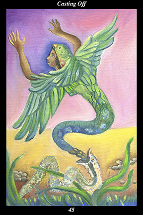

 | IMAGEAn ancient spirit, part man, part bird, and part serpent, sheds its skin and takes flight. |
INTERPRETATION
This hexagram depicts achieving freedom from the past. The man is a symbol of the training and self-discipline that leads to a harmonious and balanced lifetime. The bird is a symbol of spirit, whose vision comes from the sky. The serpent is a symbol of the body, whose vision comes from the earth. Taken together, this ancient spirit symbolizes the unified and integrated nature of the masculine half of the spirit warrior. That it sheds its skin and takes flight means that you leave behind what you have outgrown and take up the challenge of a more ennobling way of life. Taken together, these symbols mean that your training and self-discipline free you from living a life defined by others.
ACTION
The masculine half of the spirit warrior sheds the old self. As difficult as it sometimes is to believe ourselves capable of thinking new thoughts, feeling new emotions, and experiencing the world in new and more joyous ways, the time comes when all our planting, pruning, and cultivating bears just that fruit. Just as continuous pressure inevitably transforms coal into diamond, continuous effort to purify awareness inevitably transforms the troubled spirit into the untroubled spirit—and, just as the change from coal to diamond is permanent and irreversible, so too is the metamorphosis of the troubled spirit into the untroubled spirit. Although many people express a desire to permanently transform themselves, few are willing to apply themselves on a moment-to-moment, day-to-day, basis. Because they make half-hearted attempts instead of continuously concentrating on purifying the present moment of awareness, they resign themselves to the status quo and dismiss others’ efforts to achieve real freedom as futile. For this reason, it takes self-reliance and endurance to achieve a true change of heart: it is impossible to leave behind our past sense of self until we leave behind the way those around us define human nature and its potential. Rather than being worn down by the conformity all around us, we use the troubled words and actions of others as the whetstone against which we scrape away all but the untroubled spirit. It is a time for having faith in your capacity to transform yourself. Because your spirit has not been broken by adversity or disillusion, it emerges from the past purified and serene: nothing more stands between you and freedom but that you see the chains are broken and fallen away from your feet.
INTENT
The untroubled spirit is untroubled even when things are difficult, the troubled spirit is troubled even when things are going well. Conscientiously watching our own habits of thought and feeling as we react to things, we are able to achieve greater inner balance by stopping bad habits and continuing good ones. Likewise, conscientiously watching our actions toward nature, people, and spirit, we are able to achieve greater outer harmony by stopping harmful actions and continuing beneficial ones. Consistently striving to reach this union of inner balance and outer harmony enables us to cast off that which is dark and heavy and become that which is bright and light. In this sense, brightness is the quality of contentment and joy that the untroubled spirit radiates, whereas lightness is the quality of ease and buoyancy of the untroubled spirit’s presence. Because you diligently cultivate peace of mind, you shed every last vestige of agitation, restlessness, and uneasiness.
SUMMARY
See the thoughts and feelings that drag you down as habits you have outgrown. Treat them like bad habits you acquired in the past and set your mind to breaking them now. The time is especially auspicious for such an effort: the freedom and happiness you have always sought is within reach. When you clearly see that others have different habits of thought and feeling than you do, then you know you can change yourself and stop believing that you are your habits.
THE LINE CHANGES
1° You gather people around you based on proximity, not talent—they can learn to follow instruction but cannot advise you about what to do next. This allows them to advance further than they had hoped, so they are most loyal. Your own loyalty to them makes your benevolence apparent to all.
2° Someone in your midst is chronically dissatisfied, disrupting your own peace of mind but not that of those loyal to you. Able to forgive, if not to forget, you give this person a second chance to be part of the endeavor. Your flexibility and affection make your benevolence apparent to all.
3° The one chronically dissatisfied betrays your trust a second time—you cannot afford to treat matters with either wishful thinking or despair. You have to make a clean break, letting the past go. Difficult as the decision is personally, it assures your future happiness and success.
4° You gather people around you based on talent, not proximity—they are able to advise you on the next stage of your journey. The dark cloud overshadowing your blessings begins to dissipate and you begin looking to the future again. Worry has led you to peace of mind.
5° Establishing endeavors and setting up trustworthy people to manage them, you build one success upon another, benefiting others and thereby yourself. Giving them the freedom and responsibility to manage their part earns you their respect and loyalty. Benevolence has led you to happiness.
6° You look to posterity, seeking a way to share the blessings and lessons life has bestowed on you. You focus your attention inwardly, looking for the source of attention—you focus your motivation inwardly, looking for the source of motivation. Contemplation has led you to the further shore.